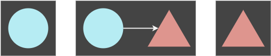
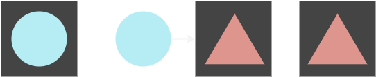
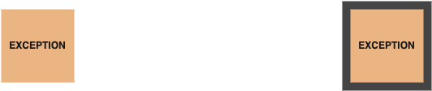
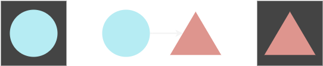
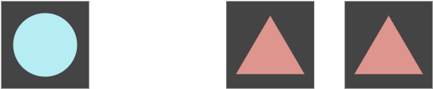
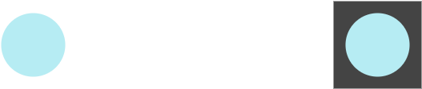
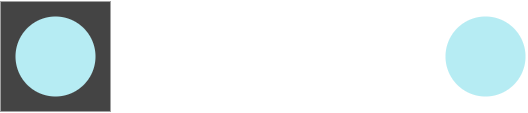

yoneda¶
basic¶
- class yoneda.basic.Maybe(data)[source]¶
Bases:
Monad,Generic[A]- classmethod just(value)[source]¶
Just constructor for Maybe class.
- Parameters:
value (object) – Non-null value.
- Returns:
Maybe monad of value.
- Return type:
- classmethod nothing()[source]¶
Nothing constructor for Maybe class.
- Returns:
Nothing monad.
- Return type:
- property state: str¶
State of monad. Either just or nothing.
- class yoneda.basic.Try(data)[source]¶
Bases:
Monad,Generic[A]- app(monad_func)[source]¶
Applicative: M(A -> B) -> MB
Given a Monad of a function A to B, return a Monad of B (MB).
- bind(func)[source]¶
Bind: (A -> MB) -> MB
Given a function A to MB, return a Monad of B (MB).
- Parameters:
func (function) – Function (A -> MB).
- Returns:
Try Monad of B.
- Return type:
Try[B]
- classmethod failure(error)[source]¶
Success constructor for Try class.
- Parameters:
error (Exception) – Error.
- Returns:
Try monad of error.
- Return type:
- fmap(func)[source]¶
Functor map: (A -> B) -> MB
Given a function A to B, return a Monad of B (MB). Example: m.fmap(lambda x: x + 2)
- Parameters:
func (function) – Function (A -> B).
- Returns:
Try Monad of B.
- Return type:
Try[B]
- property state: str¶
State of monad. Either success or failure.
monad¶
- class yoneda.monad.C¶
Monad is a library containing the Monad class and a library of monadic functions it calls.
Haskell equivalence table:
Python
Haskell
Haskell Type Signature
prefix
infix
prefix
infix
implication
signature
app
│iapp│
<*>
Applicative f =>
f (a -> b) -> fa -> fb
bind
│ibind│
>>=
Monad m =>
m a -> (a -> m b) -> m b
fail
│ifail│
fail
Monad m =>
String -> m a
fmap
│ifmap│
fmap
<$>
Functor f =>
(a -> b) -> fa -> fb
right
│iright│
>>
Monad m =>
m a -> m b -> m b
unwrap
Monad m =>
m a -> a
wrap
│iwrap│
pure
Applicative f =>
a -> f a
wrap
│iwrap│
return
Monad m =>
a -> m a
curry
│icurry│
dot
│idot│
.
.
(b -> c) -> (a -> b) -> (a -> c)
partial_dot
.
.
(b -> c) -> (a -> b) -> (a -> c)
alias of TypeVar(‘C’)
- class yoneda.monad.Monad(data)[source]¶
Bases:
Generic[A]Monad is a generic base class for monads. It implements all the monad functions as methods which take itself as the first argument.
Haskell equivalence table:
Python
Haskell
Haskell Type Signature
prefix
infix
prefix
infix
implication
signature
app
^
<*>
Applicative f =>
f (a -> b) -> fa -> fb
bind
>>
>>=
Monad m =>
m a -> (a -> m b) -> m b
fail
fail
Monad m =>
String -> m a
fmap
&
fmap
<$>
Functor f =>
(a -> b) -> fa -> fb
right
>>
Monad m =>
m a -> m b -> m b
unwrap
Monad m =>
m a -> a
wrap
pure
Applicative f =>
a -> f a
wrap
return
Monad m =>
a -> m a
- __and__(func)[source]¶
Functor map: (A -> B) -> MB
Given a function A to B, return a Monad of B (MB). Example: m & (lambda x: x + 2)
- Parameters:
func (function) – Function (A -> B).
- Returns:
Monad of B.
- Return type:
Monad[B]
- __init__(data)[source]¶
Constructs monad instance.
- Parameters:
data (object) – Data to be wrapped with Monad.
- __rshift__(func)[source]¶
Bind: (A -> MB) -> MB
Given a function A to MB, return a Monad of B (MB). Example: m >> Monad
- Parameters:
func (function) – Function (A -> MB).
- Returns:
Monad of B.
- Return type:
Monad[B]
- __weakref__¶
list of weak references to the object (if defined)
- __xor__(monad_func)[source]¶
Applicative: MA -> M(A -> B) -> MB
Given a Monad of A (MA) and a Monad of a function A to B, return a Monad of B (MB). Example: m ^ Monad.wrap(lambda x: x + 2)
- app(monad_func)[source]¶
Applicative: M(A -> B) -> MB
Given a Monad of a function A to B, return a Monad of B (MB).
- bind(func)[source]¶
Bind: (A -> MB) -> MB
Given a function A to MB, return a Monad of B (MB).
- Parameters:
func (function) – Function (A -> MB).
- Returns:
Monad of B.
- Return type:
Monad[B]
- fail(error)[source]¶
Fail: E -> ME
Return a Monad of given Exception.
- Parameters:
error (Exception) – Error.
- Returns:
Error Monad.
- Return type:
- fmap(func)[source]¶
Functor map: (A -> B) -> MB
Given a function A to B, return a Monad of B (MB). Example: m.fmap(lambda x: x + 2)
- Parameters:
func (function) – Function (A -> B).
- Returns:
Monad of B.
- Return type:
Monad[B]
- yoneda.monad.app(monad_func, monad)[source]¶
Applicative: M(A -> B) -> MA -> MB
Given a Monad of A (MA) and a Monad of a function A to B, return a Monad of B (MB).
- yoneda.monad.bind(func, monad)[source]¶
Bind: (A -> MB) -> MA -> MB
Given a Monad of A (MA) and a function A to MB, return a Monad of B (MB).
- yoneda.monad.catch(monad, func)[source]¶
Catch: MA -> (A -> B) -> (MB | ME)
Catches exception and returns it rather then raising an error.
- Parameters:
monad (Monad) – Monad.
func (function) – Function to attempt.
- Raises:
EnforceError – If monad is not Monad subclass or instance.
- Returns:
Partial function with catch logic.
- Return type:
object
- yoneda.monad.curry(func, *args, **kwargs)[source]¶
Infix notation for functools.partial.
- Parameters:
func (function) – Function to be curried.
args (optional) – Arguments.
kwargs (optional) – Keyword arguments.
- Returns:
Curried function.
- Return type:
function
- yoneda.monad.dot(func_b, func_a)[source]¶
- Dot: (b -> c) -> (a -> b) -> (a -> c)
fb |idot| fa == fb(fa)
Composes two functions.
Example
` fa = lambda x: x + 'a' fb = lambda x: x + 'b' dot(fb, fa)('x') == 'xab' (fb |idot| fa)('x') == 'xab' `- Parameters:
func_b (function) – Outer function.
func_a (function) – Inner function.
- Returns:
Function composition.
- Return type:
partial
- yoneda.monad.enforce_monad(item)[source]¶
Enforces item being a Monad subclass or instance.
- Parameters:
item (object) – Item to be tested.
- Raises:
EnforceError – If item is not Monad subclass or instance.
- Return type:
None
- yoneda.monad.fail(monad, error)[source]¶
Fail: M -> E -> ME
Given a Monad and Exception, return a Monad of that Exception.
- yoneda.monad.fmap(func, monad)[source]¶
Functor map: (A -> B) -> MA -> MB
Given a Monad of A (MA) and a function A to B, return a Monad of B (MB).
- yoneda.monad.partial_dot(func)[source]¶
Partial Dot: (b -> c) -> (a -> b)
Partial version of dot function.
Example
` app = sgm.app u = Monad(lambda x: x + 1) v = Monad(lambda x: x + 2) w = Monad(3) Monad(partial_dot) |iapp| u |iapp| v |iapp| w `- Parameters:
func (function) – Outer composition function.
- Returns:
Function composition.
- Return type:
partial
- yoneda.monad.right(monad_a, monad_b)[source]¶
Right: MA -> MB -> MB
Given two Monads, a and b, return the right Monad b.
- yoneda.monad.succeed(monad, value)[source]¶
Succed: M -> A -> MA
Given a Monad and a value, return a Monad of that value.
- yoneda.monad.unwrap(monad)[source]¶
Unwrap: MA -> A
Return the data of a given Monad instance.
- Parameters:
monad (Monad) – Monad instance.
- Raises:
EnforceError – If monad is not Monad subclass or instance.
- Returns:
Monad data.
- Return type:
A